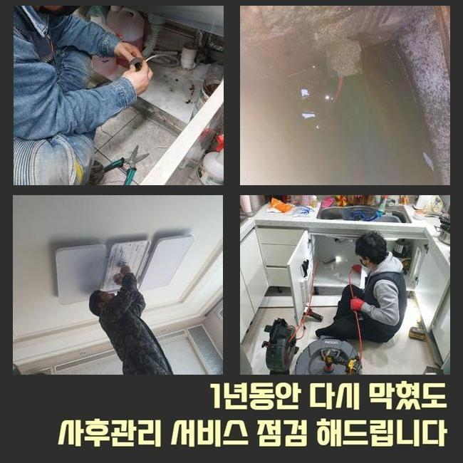
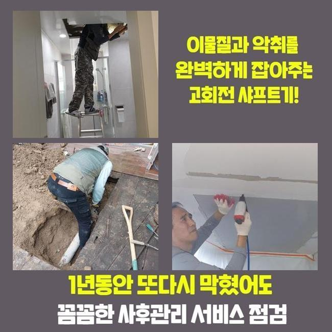
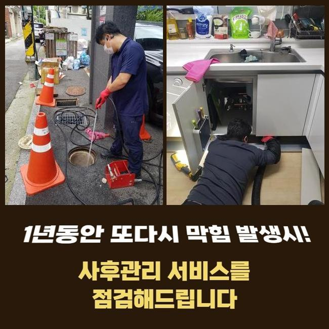
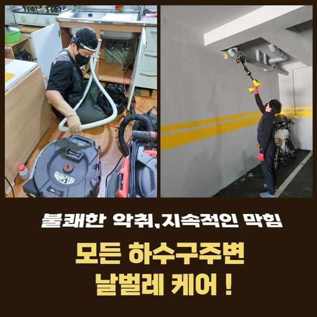
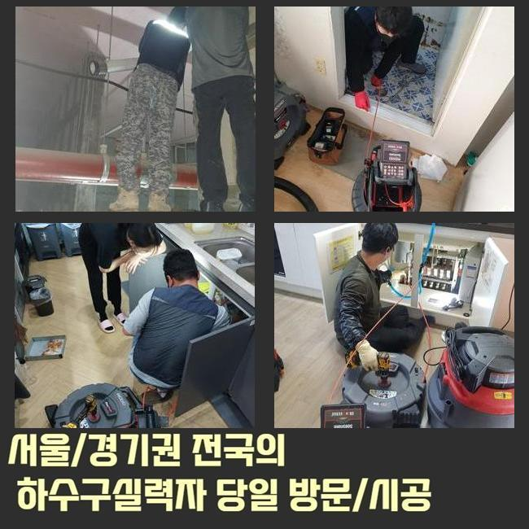

🏠 성남 야탑동화장실역류 대장동 배관뚫기 설비출장
성남 야탑동 싱크대막힘 전문 시공 후기

📋 작업 개요
- 위치: 성남 야탑동, 야탑동, 성남
- 서비스 유형: 싱크대막힘, 하수구막힘, 배관막힘, 역류해결, 뚫는업체
- 작업 일시: 2025. 6. 3. 23:21
- 업체명: 하수구수사대 (010-5615-2118)
🔍 문제 상황
성남 야탑동화장실역류 대장동 배관뚫기 설비출장
금일 수리현장은 씽크대에서 지속적으로 악취와 막힘이 발현됐는데 고객님은 셀프적으로는 해결하는것이 불가능하다고 하셨으므로 내방해보았죠
악취증세가 싱크대쪽과 주방전체로 퍼져나가는 상태라고 말해주셨는데요
무엇 때문에 좋지 않은 냄새까지 일어난 것인지와 어떤식으로 타파시킬지 알아보도록 할게요
해결해드리고자 여러가지의 전문도구를 준비해서 출동했죠 부엌으로 이동해보니 심상치 않은 배수구냄새가 발현된것이 느껴졌는데요
상태점검을 진행하니 배수속력이 더딘게 확인되었죠
고객께 현재상태를 여쭤보았더니 이전부터 이러한 현상들이 일어났었는데 막힘문제로는 이어지지는 않았기때문에 방치하시는 상황이었어요
부엌에서 오취가 발생하게 되었다면 막힘현상이 발현되었을 가능성자체를 배제해선 안되겠습니다
하부장상황은 냄새정도만 심각했고 이물질들이 넘쳐있는 상황까지는 아니었어요
마트에서 구매할수있는 악취제거 용품들을 이용했지만 악취가 사라지지않고 지속되었고 악취문제의 원인들을 알아내기 위해선 배수구내부를 점검해야 하죠

🔎 원인 분석
💡 전문가 진단: 정밀 진단 장비를 사용하여 슬러지의 고착 여부를 판명하고 타격/세척 작업을 실시했습니다.
그러나 배관속은 육안만을 이용해서는 내부속까지 파악하는게 불가하여 전문기계가 동원되어야 해요
사전에 구비해둔 카메라장비를 투입시켜 싱크대배관 상태와 잔해물의 상태까지 검사해보기로 결정했죠
내시경은 노즐끝쪽에 촬영기와 조명이 달려있어 어떤 구조든 어렵지않게 진입할수있죠
진입하게되면 이물의 종류와 통로를 막은 지점까지 각종 상태들을 파악이 가능해요
효율적으로 작업계획이 이루어지도록 스케일링 작업에 반드시 필요한 기계라고 말씀드릴수 있어요
배관안으로 내시경을 투입한후 막히게된 지점을 파악해보면서 악취의 이유를 알아내는 작업계획이 진행되었죠
배수구 초입부근에선 잔해물질들이 감지되지 않았으며 깊숙한 부분으로 진입하자 배관내벽에 슬러지들이 덩어리져있는 상황인것이 내시경으로 확인되었답니다
막히게한 이물들은 싱크대에서 흔히 보이는 잔해물중 하나이고 음식물을 처리하거나 설거지시 배출이되는 기름기들로 형성이 됩니다
배관내벽에 붙으면서 점점 커지게되고 단단해지므로 물길자체를 단계적으로 막기 시작하다 계속해서 쌓이며 하수도막힘을 발생시키는 것이죠
싱크대가 막힌곳을 해결해오면서 수없이 봤던 오염물로 깨끗하게 제거해보려면 분쇄시키는것이 효율적이라고 할수있어요

🔧 작업 과정
샤프트기계를 이용하기로 결정해주었어요 분쇄장비는 노줄 끝쪽에 사슬성질의 체인노커가 연결되어 있어요
부착된 갈고리가 하수관 내부속에서 회전하면서 잔해물을 작게 쪼개고 내벽부분에 부착되어있는 고착물들을 제거한답니다
딱딱한 형태로 덩어리져버린 이물을 소거시킬때 적합하게 활용되고 있으며 배관작업시 필수적으로 사용하는 장비에요
앞서 설명드렸던 도구를 배관속으로 삽입하여 덩어리진 이물질을 반복해주며 분쇄해내는 과정이 진행됐어요
석회회가 진행된 오염물은 한두번의 스케일링으로 제거되기란 어렵습니다
내시경장비를 동원하여 스크린으로 이물상태와 지점을 파악해가며 몇차례 분쇄공정을 진행해주었어요
분쇄가 완료되어 분해된 오염물은 하수관 아래쪽에 가라앉으므로 석션기를 이용해서 전체적으로 흡입하여 외부로 배출해주었어요
밖으로 빼낸 오물을 확인해보려고 흡입기통을 통해 오염물이 얼마나 제거되었는지 알아봤습니다
생각했던 것보다 다량은 아닌것으로 확인되었지만 해결하지않고 내버려 두었다면 이물의 양과 크기가 늘어나게 되었을 것이며 물이 넘쳐버리는 증세까지 발현되었을 거에요
분해작업과 배출작업까지 완료되니 셀프적인 방법들로 해결할수 없었던 막힘현상들이 확실히 해소된게 체감되었어요
전체적으로 마치기전에 배수점검을 시행하는데요
물을받은후 배수구쪽에 쏟아 통수점검을 시작했는데 정상적으로 순조롭게 흘러가는걸 확인했어요
막힘과 관련된 문제는 수 많은 이유들로 발생하게되고 이유에 따른 알맞은 방법으로 작업이 시행되야지만 명백하게 뚫어낼수가 있답니다
문제발견즉시 전문가와 동행하여 처리해 보는게 제일 좋아요
업체문의시 AS서비스나 비용적인 부분들에 대해서도 꼼꼼히 따져봐야 합니다
저희업체의 경우엔 1년내로 문제 재발시 사후케어를 진행해드려요


✅ 작업 완료
이밖에도 어떤 지역이든 1~2시간 안팎으로 방문드리고자 노력하고 있죠
면밀하게 작업하는 내용들을 공개하고 있으며 고객님께서도 같이 수리과정과 결과에 대한 부분들도 파악할수있죠
앞서 설명드렸지만 방치한다거나 무리한 셀프대처를 취하게 된다면 되레 막힘증세를 악화시킬수 있사오니 조심하셨으면 해요
싱크대 막힘으로 궁금하신게 해소되지 않으셨다면 시간관계없이 문의바래요


⚠️ 주방 싱크대 배관 막힘 예방 수칙
- ✅ 기름기가 묻은 식기나 프라이팬은 설거지 전 키친타올로 반드시 기름때를 닦아내세요.
- ✅ 주기적으로 싱크대 개수대에 뜨거운 물을 가득 받아 한 번에 내려 배관 내부 기름을 씻어내세요.
- ✅ 배수구 거름망을 미세한 필터로 사용하시고 음식물 찌꺼기가 틈으로 새어 들지 않게 관리하세요.
- ✅ 베이킹소다와 식초를 뜨거운 물과 함께 일주일에 한 번씩 부어주면 배관 살균과 막힘 예방에 좋습니다.
💡 핵심 정리
- 확실한 장비 작업(내시경 점검 및 샤프트 스케일링)으로 원인을 뿌리 뽑습니다.
- 작업 후 1년 이내에 동일한 부위 재발 시 100% 무상 A/S 서비스를 보장합니다.
- 서울 · 경기 · 인천 전 지역에 24시간 언제든 긴급 출동할 수 있도록 항시 대기 중입니다.
❓ 자주 묻는 질문 (FAQ)
🚨 성남 야탑동 싱크대막힘 문제로 고민이신가요?
정확한 원인 진단과 확실한 시공으로 재발 없는 해결을 약속드립니다.
24시간 긴급 출동 | 서울 · 경기 · 인천 전지역 | 1년 내 재발 시 무상 A/S